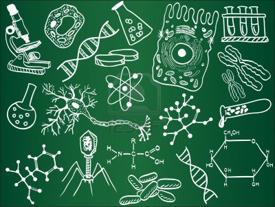

Un poco sobre mí
Antes de su accidente automovilístico, Aarón era extremadamente egoísta, arrogante, obstinado y de mente estrecha; sin embargo, esto cambió después del accidente, que dejó a Aarón como un hombre roto, aunque también uno extremadamente determinado a sanarse a sí mismo. Después de descubrir la existencia de lo sobrenatural y participar cada vez más en las guerras dimensionales; Aarón se vuelve mucho más desinteresado, moral, honorable, honesto, responsable, de mente abierta y protector de sus amigos y camaradas. Tampoco le afecta disculparse o admitir cuando está equivocado. Aarón es muy inteligente, ya que se le ocurrieron varias ideas creativas; a pesar de que recientemente se convirtió en hechicero y no tenía experiencia en comparación con Mordo y sus enemigos.
Mis gustos. |
|||||||||
| Baloncesto | |||||||||
 |
Videojuegos | ||||||||
|  | Biología | ||||||||
 |
Química | ||||||||